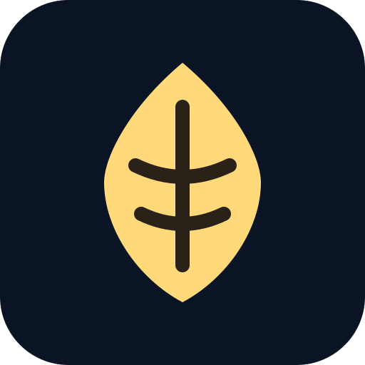

Konu testleri
Her konunun testleri sırayla. Şekil, soru, şıklar; yanına karalama alanı ve notların. Çözüm ekranında adım adım yazılı çözüm.

Koza KampüsKonu testleri, konu anlatımları ve denemeler bir arada. Tamamladığın her test ve anlatım, kampüs adanda bir binaya dönüşür.
Parola yok. Telefon numaran ve SMS koduyla girersin.
Kazanım bazlı, sürekli büyüyen bir havuz. Öğrenciye yalnızca hoca onayından geçmiş soru gösterilir.
Her konunun testleri sırayla. Şekil, soru, şıklar; yanına karalama alanı ve notların. Çözüm ekranında adım adım yazılı çözüm.
Bölümlere ayrılmış video anlatımlar. Kaldığın yerden devam edersin; izlerken not alırsın, notların Notlarım'da toplanır.
TYT ve AYT denemeleri gerçek süreyle, ders bazında denemeler süresiz. Teslimden sonra karne: net, ders ve konu dökümü, çözümler.
Koza Kampüs sana ne çalışacağını söylemez; ne yaptığını gösterir. Kaç doğru, kaç yanlış, kaç boş; kaç test tamamlandı. Etiket, sıralama ve puanlama yoktur. Bina yalnızca tamamladığın içerikle yükselir, doğru ya da yanlış sayısı binayı etkilemez ve bina gerilemez.
Net 26,00 · Yanlış ve boş bıraktıkların Tekrar defterine düşer; istediğinde yeniden çözersin.
İlk pilot az sayıda öğrenciyle başlıyor. Katılmak ya da içerik sağlamak için bir e-posta yeter.
info@kozakampus.com